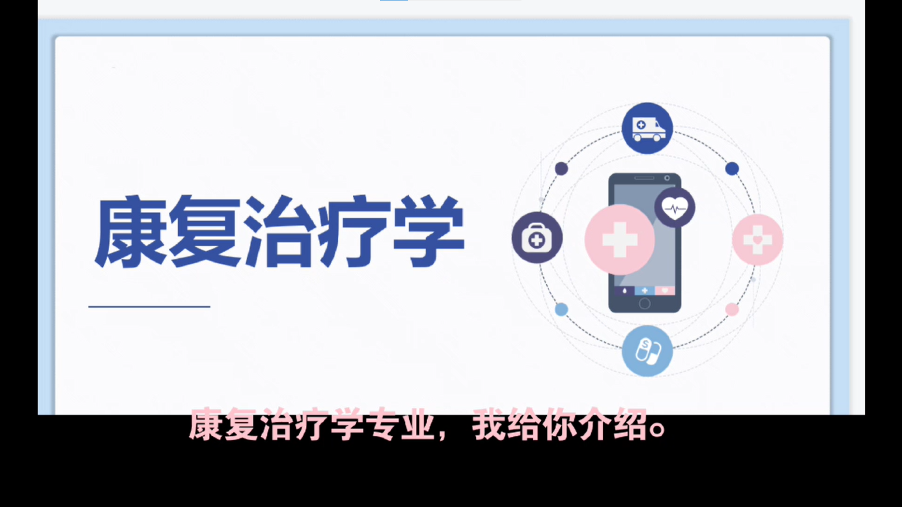
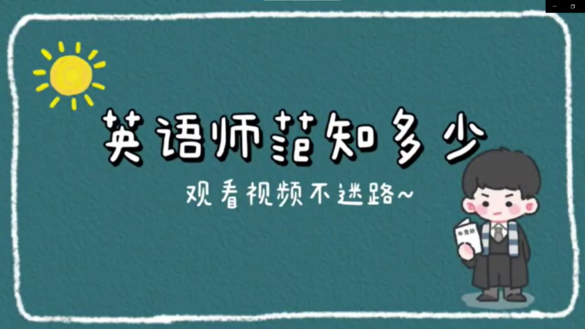
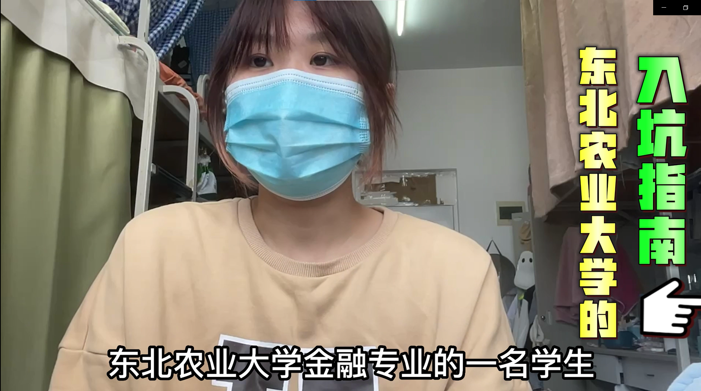
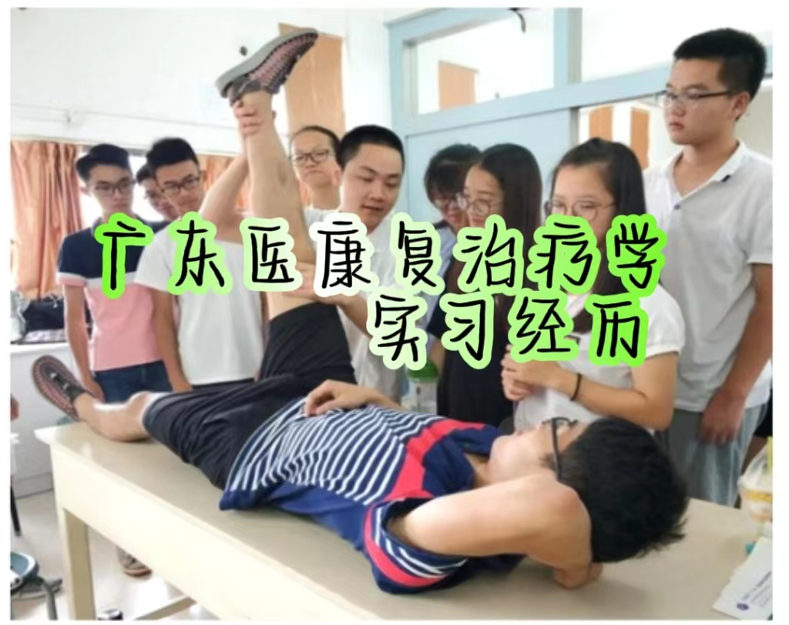
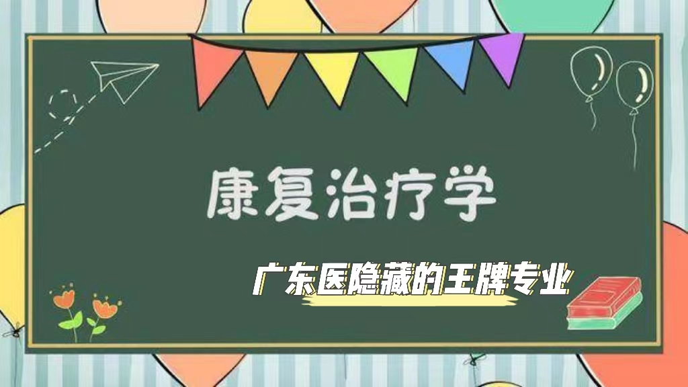
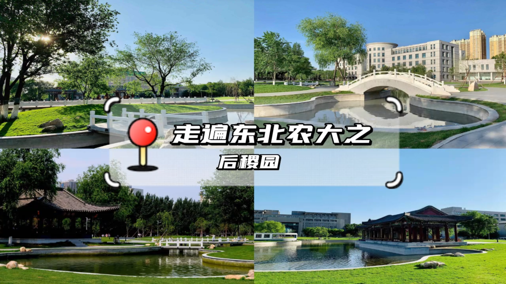
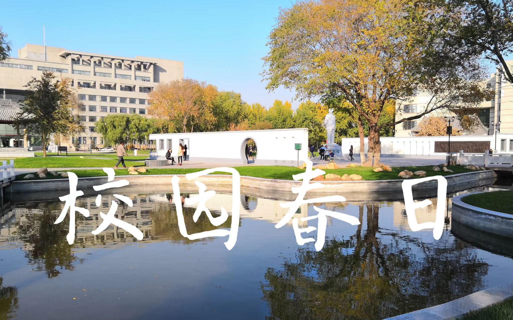
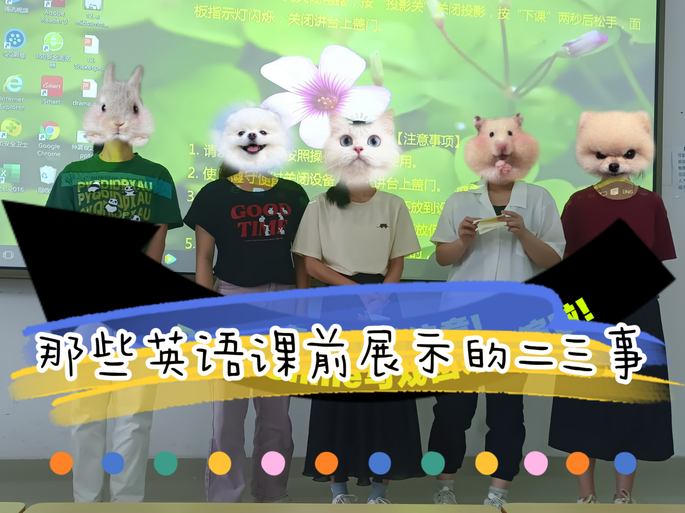
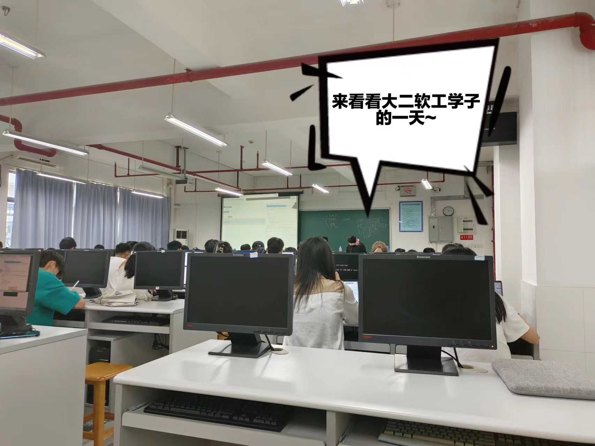
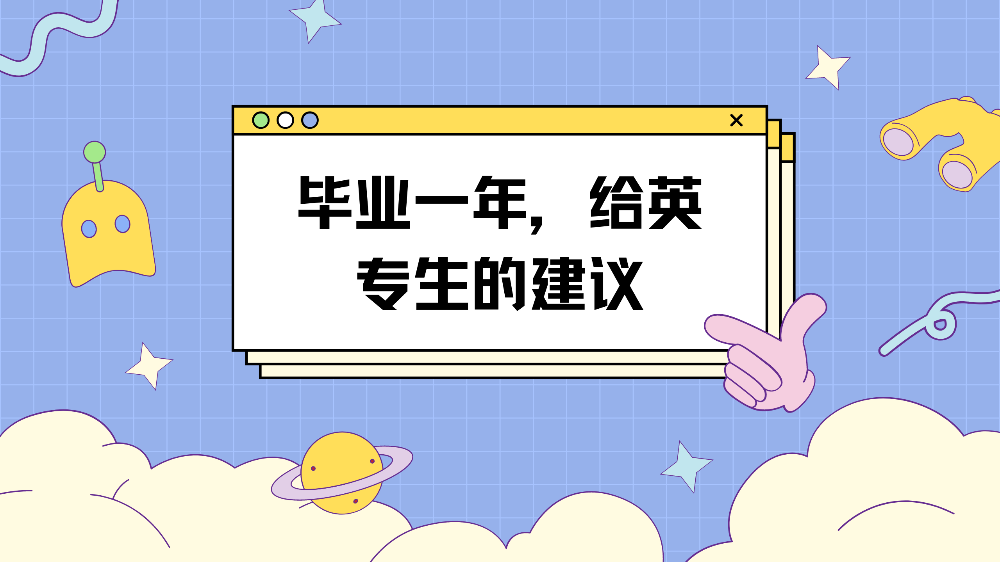

视频推荐
-

广东医科大学康复治疗学专业解读
康复治疗学 • 广东医科大学 -

广东第二师范学院英语师范专业解读
英语师范 • 广东第二师范学院 -

东北农业大学国际经济与贸易介绍
国际经济与贸易 • 东北农业大学 -

广东医康复治疗学实习经历
康复治疗学 • 广东医科大学 -

广东医隐藏的王牌专业——康复治疗学
康复治疗学 • 广东医科大学 -

走遍东北农大之后稷园
东北农业大学 -

东北农业大学校园春日
东北农业大学 -
肇庆学院-制药工程那些事
制药工程 • 肇庆学院 -

那些英语课前展示的二三事
英语师范 • 广东第二师范学院 -

英语（师范）专业学些啥
英语师范 • 广东第二师范学院 -
是否要选择英语专业？就业率如何？
英语师范 • 广东第二师范学院 -

来看看大二软工学子的一天~
软件工程 • 广东第二师范学院 -

英专生进，毕业一年，给英专生的建议
英语师范 • 广东第二师范学院